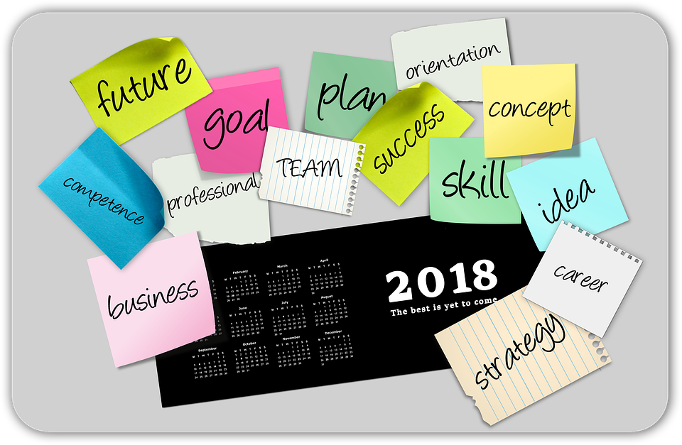
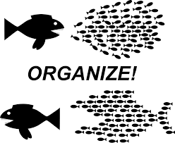

Blog of 2017
Organization, relationships and driving efficiencies - How women can lead in household tech
Organization and Discipline - When I was home with my son for few months, I had a chance to visit the non-working parents and their households, the nannies and their households, I went networking from a single mother, therapist to the student who shares extended duties of mother and brother at their home since she was 18, when her father got deported. I also saw the households of my dear non working friends who would have parties to cater and community classes to attend. I was intrigued by these experiences because till then all I did in my home was little bit cooking on the evennings and the vacuuming and grocery on weekends. While I always liked to be minimalist, and not pay attention to the decorations or staging, dressing kids or planning and arranging events or parties, I would crave to visit households like these to learn new things about the organization.
If things are not organized and not kept in place, that drives inefficiencies. If things are messy vs messier, I found the earlier is better. So the theme that came out thenafter, was wherever I could improve the organization by spending a minute or two, I would. That was the key learning, if I find myself confused, cluttered or not creating anything, now I stop, step back and try to organize, thoughts, things relations and then take a plung. It has helped me a lot in the next moves I made in the career thenafter.
If it helps to visualize the change, now I keep 3 pair of shoes in the place instead worrying about all 10, I clean up my desk in the aftrnoons when I am sleepy instead of reaching for a coffee and bringing one more cup to put aside. I got good at sorting and piling on the fly. Most of my social phone calls are assisted with some organization around office or around the house, its still timebound and although I am not fan of house keeping or staging, when I touch things often, the mental picture gets stored and it helps me recall better.
Organizing stuff - Another learning is that basic organization requires a survey or tally of what you got, deciding the place for all of those things, sometimes requring to give out your possessions so that at the end you only possess valuable and essentials, sometimes getting more tools. Also this process of organization requires you to put the physical things in the perspective of loss, love, fullfillment, money and time. Once your "things" have these tags its easy for you to arrange in the way that can be least time consuming for each of your items to retrieve and process it in timely manner.
Rythm and frequency - Not to say organising and clearing clutter is an ongoing process, you may assign one or two days a quarter or year, everyone is different and their circumstances are too. The younger the person is, there are more chances of running into unimaginable clutter. And the older you get there is less stamina and motivation to hang on to those worldly things in that microscopic scale and shallowness.
Organising Relationships - When we are young, we have friends and families and parents of friends and your baby sitters and teachers and extended curriculum class teachers and more friends we met at the camp and so on.... If however you want to keep all of them when you are 30, I hope I am not the only one who failed to keep all of those relationships intact at such a late age. Yet the gold is gold. the Best friends and closest family would stay with you forever. The point is can we apply the same organization principals to the relationships and get the same rewards of fullfillment and same rest at mind when we organize and label the relations as essential, worthy, enriching, progressive and so on. Would you ever clear the relationship clutter? May be organize your facebook as well ? give away some of the grudges and move on - forgiveness is like that, its like donating your stuff to "good will".
So with that seagway and back on track for organization in household, in those days when I was networking with women - I have seen so much efficiency in women to do all those things as a second nature to keep the families and house and kids all alligned and on track for success. Without missing the beat of the music of their relations.
My Question is how can we chanellize that same brilliant inbuilt talent to organize the teams and deliver reults, while making less costly mistakes, keeping everyone engaged and motivated - for all organizations, let it be a winning game like our home. The more questions and critical thinking you do, more wise you would become - applying that to this scenario, I inspected women around me from my past to present workplaces and teams, I realized a theme.
To deliver the same results at the workplace, we must welcome each other and make us feel home. Its the teaching and childcare and medicine and nursing and other fields that have always enjoyed the endless contributions of women, it tells clearly that those are the battlegrounds they worry much about wining as they speak to them naturally. Let the business speak to you like your home does.
The bottomline is, with growing number of career minded tech loving girls, Women for sure would lead the "tech in household " when it comes to that.
Concrete examples what I mean by such tech, and I would love to be a part of it.
Robotics - Robots that organize places like office and hallways and kitchens - e.g. Small cocroach like robots that destroying food particles and scrapes from shelves. Waste Management - - Automation around the garbage disposal, account for plastic or other footprint in landfills. Enviornment - Water conservation and efficient appliances. Self serving cooking stations - Help community with using local produce and group cooking. Winning by organizing - Using power of AI, shopping for "real" household supplies - saving the last minute trip to the drug store, grocery outlet, prepare family Time bound event planning Because every moment is worth living. Take care of you and your meaningful relations tracking relationshi quotient, empathetic conversations.